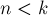

MAXimal
добавлено: 11 Jun 2008 11:15
редактировано: 17 Sep 2010 22:19
Содержание [скрыть]
Биномиальные коэффициенты
Биномиальным коэффициентом  называется количество способов выбрать набор
называется количество способов выбрать набор  предметов из
предметов из  различных предметов без учёта порядка расположения этих элементов (т.е. количество неупорядоченных наборов).
различных предметов без учёта порядка расположения этих элементов (т.е. количество неупорядоченных наборов).
Также биномиальные коэффициенты - это коффициенты в разложении (т.н. бином Ньютона):
Считается, что эту формулу, как и треугольник, позволяющий эффективно находить коэффициенты, открыл Блез Паскаль (Blaise Pascal), живший в 17 в. Тем не менее, она была известна ещё китайскому математику Яну Хуэю (Yang Hui), жившему в 13 в. Возможно, её открыл персидский учёный Омар Хайям (Omar Khayyam). Более того, индийский математик Пингала (Pingala), живший ещё в 3 в. до н.э., получил близкие результаты. Заслуга же Ньютона заключается в том, что он обобщил эту формулу для степеней, не являющихся натуральными.
Вычисление
Аналитическая формула для вычисления:

Эту формулу легко вывести из задачи о неупорядоченной выборке (количество способов неупорядоченно выбрать элементов из элементов). Сначала посчитаем количество упорядоченных выборок. Выбрать первый элемент есть способов, второй —  , третий —
, третий —  , и так далее. В результате для числа упорядоченных выборок получаем формулу: . К неупорядоченным выборкам легко перейти, если заметить, что каждой неупорядоченной выборке соответствует ровно упорядоченных (т.к. это количество всевозможных перестановок элементов). В результате, деля на , мы и получаем искомую формулу.
, и так далее. В результате для числа упорядоченных выборок получаем формулу: . К неупорядоченным выборкам легко перейти, если заметить, что каждой неупорядоченной выборке соответствует ровно упорядоченных (т.к. это количество всевозможных перестановок элементов). В результате, деля на , мы и получаем искомую формулу.
Рекуррентная формула (с которой связан знаменитый "треугольник Паскаля"):
Её легко вывести через предыдущую формулу.
Стоит заметить особо, при  значение всегда полагается равным нулю.
Свойства
Биномиальные коэффициенты обладают множеством различных свойств, приведём наиболее простые из них:
- Правило симметрии:
- Внесение-вынесение:
- Суммирование по :
- Суммирование по :
- Суммирование по и :
- Суммирование квадратов:
- Взвешенное суммирование:

- Cвязь с числами Фибоначчи:
Вычисления в программе
Непосредственные вычисления по аналитической формуле
Вычисления по первой, непосредственной формуле, очень легко программировать, однако этот способ подвержен переполнениям даже при сравнительно небольших значениях и (даже если ответ вполне помещается в какой-нибудь тип данных, вычисление промежуточных факториалов может привести к переполнению). Поэтому очень часто этот способ можно применять только вместе с [[Длинная арифметика|Длинной арифметикой]]:
int C (int n, int k) { int res = 1; for (int i=n-k+1; i<=n; ++i) res *= i; for (int i=2; i<=k; ++i) res /= i; }
Улучшенная реализация
Можно заметить, что в приведённой выше реализации в числителе и знаменателе стоит одинаковое количество сомножителей (), каждый из которых не меньше единицы. Поэтому можно заменить нашу дробь на произведение дробей, каждая из которых является вещественнозначной. Однако, можно заметить, что после домножения текущего ответа на каждую очередную дробь всё равно будет получаться целое число (это, например, следует из свойства "внесения-вынесения"). Таким образом, получаем такую реализацию:
int C (int n, int k) { double res = 1; for (int i=1; i<=k; ++i) res = res * (n-k+i) / i; return (int) (res + 0.01); }
Здесь мы аккуратно приводим дробное число к целому, учитывая, что из-за накапливающихся погрешностей оно может оказаться чуть меньше истинного значения (например,  вместо трёх).
вместо трёх).
Треугольник Паскаля
С использованием же рекуррентного соотношения можно построить таблицу биномиальных коэффициентов (фактически, треугольник Паскаля), и из неё брать результат. Преимущество этого метода в том, что промежуточные результаты никогда не превосходят ответа, и для вычисления каждого нового элемента таблицы надо всего лишь одно сложение. Недостатком является медленная работа для больших N и K, если на самом деле таблица не нужна, а нужно единственное значение (потому что для вычисления понадобится строить таблицу для всех , или хотя бы до ).
const int maxn = ...; int C[maxn+1][maxn+1]; for (int n=0; n<=maxn; ++n) { C[n][0] = C[n][n] = 1; for (int k=1; k<n; ++k) C[n][k] = C[n-1][k-1] + C[n-1][k]; }
Если вся таблица значений не нужна, то, как нетрудно заметить, достаточно хранить от неё только две строки (текущую — -ую строку и предыдущую — -ую).
Вычисление за O(1)
Наконец, в некоторых ситуациях оказывается выгодно предпосчитать заранее значения всех факториалов, с тем, чтобы впоследствии считать любой необходимый биномиальный коэффициент, производя лишь два деления. Это может быть выгодно при использовании Длинной арифметики, когда память не позволяет предпосчитать весь треугольник Паскаля, или же когда требуется производить расчёты по некоторому простому модулю (если модуль не простой, то возникают сложности при делении числителя дроби на знаменатель; их можно преодолеть, если факторизовать модуль и хранить все числа в виде векторов из степеней этих простых; см раздел "Длинная арифметика в факторизованном виде").